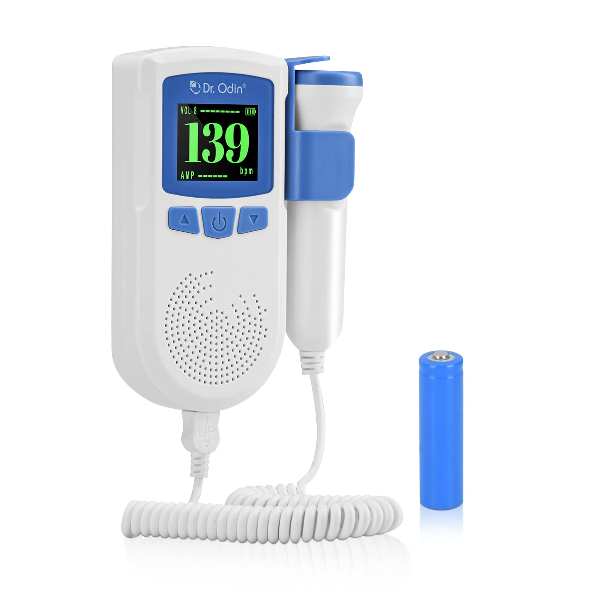

 The device was invented in 1958 by Dr. Edward H. Hon,[1] Originally intended for use by health care professionals, this device is becoming popular for personal use. A Doppler fetal monitor is a hand-held ultrasound transducer used to detect the fetal heartbeat for prenatal care. It uses the Doppler effect to provide an audible simulation of the heart beat. Some models also display the heart rate in beats per minute (BPM). Use of this monitor is sometimes known as Doppler auscultation. The Doppler fetal monitor is commonly referred to simply as a Doppler or fetal Doppler. It may be classified as a form of Doppler ultrasonography (although usually not technically -graphy but rather sound-generating). Doppler fetal monitors provide information about the fetus similar to that provided by a fetal stethoscope. One advantage of the Doppler fetal monitor over a (purely acoustic) fetal stethoscope is the electronic audio output, which allows people other than the user to hear the heartbeat
Probe: The probe is the handheld device that is placed on the mother's abdomen to listen to the fetal heartbeat. It contains a transducer that emits and receives ultrasound waves.
Cable:The cable connects the probe to the main unit and transfers the ultrasound signal.
Main unit:The main unit is the control center of the fetal monitor. It receives the ultrasound signal from the probe, processes it, and displays the fetal heart rate.
Display screen: : The display screen shows the fetal heart rate and may also display other information, such as the strength of the heartbeat or the mother's heart rate.
Power source: The fetal monitor requires a power source to operate. It may use batteries or be plugged into an electrical outlet.
Recording capability: Some fetal monitors have the ability to record the fetal heartbeat, allowing healthcare providers to review the data later or share it with the mother.
Dopplers for home or hospital use differ in the following ways: Manufacturer: popular manufacturers Baby Doppler, Sonoline, Ultrasound Technologies, Newman Medical, Nicolet (purchased by Natus), Arjo-Huntleigh, and Summit Doppler (now Cooper Surgical). Probe type: waterproof or not. Waterproof probes are used for water births. Probe frequency: 2-MHz or 3-MHz probes. Most practitioners can find the heart rate with either probe. A 3-MHz probe is recommended to detect a heart rate in early pregnancy (8–10 weeks gestation). A 2-MHz probe is recommended for pregnant women who are overweight. The newer EchoHeart 5-MHz transvaginal probes aids in the detection of fetal heart tones (FHT) early in pregnancy (6–8 weeks) and for patients who have a retroverted uterus or throughout pregnancy for FHT detection for women who are obese. Heart rate display: some Dopplers automatically display the heart rate on a built-in LCD; for others the fetal heart rate must be counted and timed by the practitioner. A major advantage of being able to record and share the recording is that it can be emailed to a healthcare professional to be checked if there are any concerns about whether or not it is the fetus's heart rate and whether or not is normal. Typically, they work from about 12 weeks.[2] In response to increasing home usage of clinical fetal doppler systems, the FDA issued a formal statement recommending against at-home use.[3] Fetal dopplers using 2-3MHz ultrasound are prescription devices designed and developed for use by licensed and trained health care professionals. System misuse (duration, angulation) and systems operating outside of intended range can produce thermal and non-thermal effects on fetal tissue, including the possibility for over-heating fetal tissue and introducing mechanical stress on the fetus due to cavitation, radiation force, and acoustic streaming.[4][5] The use of the word Sonicaid for Doppler fetal monitors comes from the products of the UK company Sonicaid Ltd. Sonicaid products included the D205/206 portable fetal Dopplers and FM2/3/4 series of fetal monitors. The company was acquired by Oxford Instruments in 1987 to form Oxford Sonicaid.